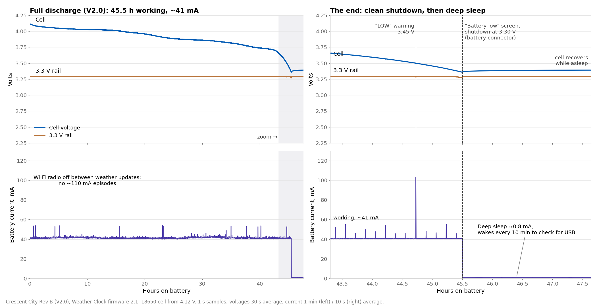
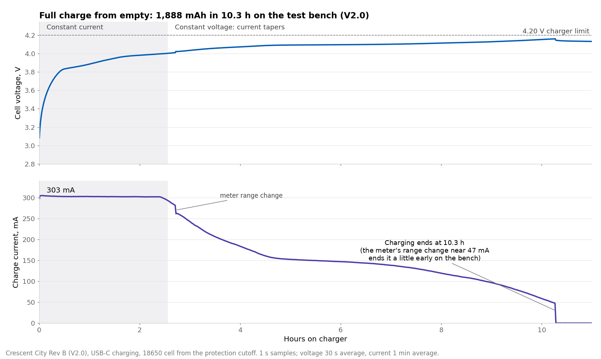

Summary
19 of 38 tests pass so far
Testing is still under way: 20 of 38 tests are done and 18 are in progress or still to run. One failure is explained under Findings. The numbers most people ask about:
Findings
What we found on V2.0
Breadboard fit and pin labels fixed on V2.0
FixedVIS-011 · found July 2026
The first prototypes were hard to push into a breadboard and had no pin names next to the headers. V2.0 seats in a standard breadboard and has all 24 pin names printed on top.
Deep sleep draws 0.78 mA, above the 0.2–0.4 mA target
OpenREV-08 · found October 2026
After a low-battery shutdown the board draws 0.78 mA. Most of it is likely the RGB LED, which stays powered in sleep; we are confirming that. It is safe: a flat battery left on the board reaches the battery protection cutoff in about 3–6 days, then draws about 1.2 µA. Charge the board, or unplug the battery, if it will sit unused.
The board now shuts down cleanly when the battery runs low
FixedBAT-02 · found July 2026
On the first prototypes the board kept rebooting for up to 2.5 hours before the battery cut off. Weather Clock 2.1 warns at 3.45 V, shows a low-battery screen and goes to sleep at 3.30 V, and wakes when USB is plugged in. On a V2.0 board it shut down cleanly with no reboots, and woke 19 times out of 19.
Radio no longer kept awake on battery: 24 hours per 1000 mAh
FixedBAT-01 · found October 2026
With Wi-Fi always on, the Weather Clock averages about 70 mA (about 14–14.5 hours per 1000 mAh), and network traffic sometimes kept the radio awake at about 110 mA. Weather Clock 2.1 turns the radio off between weather updates and slows the processor on battery: about 41 mA, or 24 hours per 1000 mAh, measured on a V2.0 board over a 45.5-hour run.
Location setup asks for country and state
FixedFW-06 · found October 2026
A city name alone could land on the wrong place and show the wrong time. Weather Clock 2.1 asks for country, state and city (or a ZIP code); a state such as TX picks the right Paris.
Battery & power
Battery life and low-battery shutdown
A V2.0 board ran a test build of Weather Clock 2.1 on a single 18650 cell (4.12 V at the start) until the firmware shut it down, then slept until USB was plugged in. Current, cell voltage and the 3.3 V rail were logged every second.
Chart and details


- 45.5 hours working at about 41 mA, about 24 hours per 1000 mAh. With the radio off between updates there were no ≈110 mA stretches, and all 271 weather updates connected.
- No reboots, no “on but not working” time. The 3.3 V rail held steady to the end.
- Clean shutdown. “LOW” warning at 3.45 V, then the “Battery low” screen and deep sleep at 3.30 V at the battery connector (cell 3.36 V under load). The battery gauge reads the charge left before this point, so it reaches empty when the board shuts down.
- Deep sleep 0.78 mA, waking every 10 minutes for a moment to check for USB. Plugging in USB‑C woke the board every time (19 of 19 in our tests).
- For comparison: a V2.0 board with Wi‑Fi always on (firmware 1.0) ran 28.6 hours at about 69 mA, about 14.5 hours per 1000 mAh.
Charging
A V2.0 board charged the same kind of cell from empty (2.89 V at rest, after the protection cutoff) over USB‑C, logged every second. V2.0 charges at about 300 mA; V1.0 charged at about 200 mA.
Chart and details


- Constant current: 303 mA (302.8 and 302.5 mA on two V2.0 boards), for about 2.5 hours on this cell.
- 1,888 mAh in 10.3 hours on the test bench, about 5.4 hours per 1000 mAh, against 6.7 hours on V1.0. The bench wiring adds resistance, so a cell plugged straight into the board charges a little faster.
- End of charge. On the bench the meter’s range change near 47 mA ended this charge early. Two later charges with the meter taken out of the battery lead stopped cleanly at 23–25 mA, about 8% of the charge current, as designed.
- Highest cell voltage 4.174 V with the cell wired straight to the board (4.2 V charger). The charger chip ran at about 55 °C at 303 mA (limit 85 °C).
How we tested
- Current: a power profiler in the battery supply line, 1 sample per second.
- Voltage: a data logger on the cell, the board’s battery input and the 3.3 V rail, 1 sample per second.
- Firmware: test builds of Weather Clock 2.1 with a heartbeat output and a serial status line, to mark exactly when the board stopped working or changed state.
- Data: full discharge and full charge, 10-second averages (CSV).
All tests
Every test, by subsystem
Open a subsystem, then tap a test to see what was expected and what was measured. V2.0 uses its own test IDs; they are not the V1.0 IDs. Some V1.0 test groups were not repeated — see which, and why.
SCR · Screen, every board
14 to go
SCR-01Visual inspection under a microscope: solder joints, USB protection part, RGB LED orientation, battery connectorNot run yet
Expected: All OK on each board; at least 4 boards must pass
Plan §SCR-01
SCR-02First power from a current-limited 5 V supply, no battery or displayNot run yet
Expected: 15–90 mA, limit not hit on each board; at least 4 boards must pass
Plan §SCR-02
SCR-033.3 V rail voltage2 of 10 boardsIn progress
Expected: 3.25–3.35 V on each board; at least 4 boards must pass
Measured: board 1: 3.29 V · board 2: 3.291 V
Plan §SCR-03 · boards 1 and 2
SCR-04USB-C connects to a computer; the board programs and runs the test firmware2 of 10 boardsIn progress
Expected: Programs and runs on each board; at least 4 boards must pass
Measured: board 1: pass · board 2: pass
Plan §SCR-04 · boards 1 and 2
SCR-05Header pins: automatic test for solder bridges between neighbouring pinsNot run yet
Expected: 9/9 pairs pass on each board; at least 4 boards must pass
Plan §SCR-05
SCR-06Display test patternNot run yet
Expected: All pixels, border and crosshair correct; no missing rows/columns on each board; at least 4 boards must pass
Plan §SCR-06
SCR-07RGB LED coloursNot run yet
Expected: Correct colours in the right order (SK6812-B) on each board; at least 4 boards must pass
Plan §SCR-07
SCR-08BOOT and RESET buttonsNot run yet
Expected: Both work on each board; at least 4 boards must pass
Plan §SCR-08
SCR-09Qwiic port finds a temperature and humidity sensorNot run yet
Expected: Found at 0x44; plausible temperature and humidity on each board; at least 4 boards must pass
Plan §SCR-09
SCR-10Wi-Fi finds the access point; signal strength recorded2 of 10 boardsIn progress
Expected: Sees the home AP; RSSI within 6 dB of the other boards (record) on each board; at least 4 boards must pass
Measured: board 1: -67 dBm · board 2: -68 dBm
Plan §SCR-10 · boards 1 and 2
SCR-11Battery charge current2 of 10 boardsIn progress
Expected: ≈ 303 mA (R5 3.3 kΩ) on each board; at least 4 boards must pass
Measured: board 1: 302.8 mA · board 2: 302.5 mA
Plan §SCR-11 · boards 1 and 2
SCR-12Battery reading offset: the board's reading against a reference at 3.80 V2 of 10 boardsIn progress
Expected: 0.03–0.11 V (V1.0 board 1: 0.071 V) on each board; at least 4 boards must pass
Measured: board 1: 0.065 V · board 2: 0.061 V
Plan §SCR-12 · boards 1 and 2
SCR-13USB detection: USB voltage read correctly, flag clears on battery1 of 10 boardsIn progress
Expected: VUSB 4.75–5.25 V with USB; USB flag clears on battery on each board; at least 4 boards must pass
Measured: board 2: pass
Plan §SCR-13 · board 2
SCR-14Weather Clock firmware loads from a fresh flash and sets up through its portal1 of 10 boardsIn progress
Expected: Portal → Wi‑Fi → time and weather → RGB colour → battery icon on each board; at least 4 boards must pass
Measured: board 2: pass
Plan §SCR-14 · board 2
REV · What changed in V2.0
9 pass1 fail
REV-01Battery plug polarity: a JST-PH LiPo's + wire meets J2 pin 1passPass
Expected: + on pin 1
Result: Correct polarity. A cell plugged in backwards did not damage the board.
Plan §REV-01
REV-02Battery plug fit, breadboard fit and header labelspassPass
Expected: Plug latches, J2 undisturbed; seats in a breadboard; labels correct
Result: The battery plug latches, the board seats in a standard breadboard, and all 24 header labels match the pinout.
Plan §REV-02
REV-03Charge current during constant-current charging302.8 mAPass
Expected: ≈ 303 mA
Measured: 302.8 mA
Result: 302.8 mA and 302.5 mA on two boards.
Plan §REV-03 · boards 1 and 2
REV-04Highest cell voltage during charging4.174 VPass
Expected: 4.168–4.232 V
Measured: 4.174 V
Result: 4.174 V with the cell wired straight to the board. With a current meter in the battery lead the reading is about 15 mV lower; that is the meter wiring, not the charger.
Plan §REV-04 · board 2
REV-05Current at which charging stops23 mAPass
Expected: < 30 mA (the charger stops at 7.5 % ≈ 23 mA)
Measured: 23 mA
Result: About 23 mA, 8 % of the charge current, as designed.
Plan §REV-05 · board 2
REV-06Charger chip temperature while charging with Wi-Fi on55 °CPass
Expected: ≤ 85 °C
Measured: 55 °C
Result: About 55 °C while charging at 303 mA, well under the 85 °C limit.
Plan §REV-06
REV-07USB input current while charging with Wi-Fi on363 mAPass
Expected: Record; ≤ 500 mA, else docs say 'use a ≥ 1 A charger'
Measured: 363 mA
Result: 363 mA while charging with Wi-Fi on, so a standard 500 mA USB port is enough.
Plan §REV-07
REV-08Deep-sleep current after a low-battery shutdown0.782 mAFail
Expected: 0.20–0.40 mA (R34 10 kΩ)
Measured: 0.782 mA
Result: 0.78 mA, above the 0.20–0.40 mA target; see Findings. A flat battery left on the board reaches the protection cutoff in about 3–6 days, then draws about 1.2 µA.
Plan §REV-08 · board 2
REV-09Wakes from low-battery sleep when USB is plugged in19 wakesPass
Expected: ≥ 10 wakes in a row, no miss
Measured: 19 wakes
Result: 19 of 19.
Plan §REV-09 · board 2
REV-10Wi-Fi signal strength compared with V1.0passPass
Expected: Within ±3 dB
Result: No difference from V1.0 at the same spot.
Plan §REV-10
BAT · Battery life
2 pass1 to go
BAT-01Battery life with the Weather Clock, per 1000 mAh24.4 h / 1000 mAhPass
Expected: ≥ 13 h per 1000 mAh
Measured: 24.4 h / 1000 mAh
Result: 24.4 hours per 1000 mAh with Weather Clock 2.1 (45.5 hours on a 1.9 Ah cell, 41 mA average). With Wi-Fi always on, as in firmware 1.0: about 14–14.5 hours.
Plan §BAT-01 · board 2
BAT-02Clean shutdown when the battery runs lowpassPass
Expected: Clean shutdown
Result: "Battery low" screen, then deep sleep. No reboots.
Plan §BAT-02 · board 2
BAT-03Hours from the shutdown until the battery protection disconnects the cell (optional)Not run yet
Expected: Record (estimate 72–144 h at 0.78 mA)
Plan §BAT-03
FW · Weather Clock 2.1 battery features
7 pass1 to go
FW-01Low-battery warning and shutdown voltages3.298 VPass
Expected: Warn 3.45 V, cutoff 3.30 V ± 0.02 V
Measured: 3.298 V
Result: Warning at 3.45 V, shutdown at 3.30 V (measured 3.298 V at the battery connector).
Plan §FW-01 · board 2
FW-02A short USB connection after a shutdown does not restart the board on a flat battery6 of 6Pass
Expected: Back to sleep every time
Measured: 6 of 6
Result: 6 of 6.
Plan §FW-02 · board 2
FW-03Charging icon shows full within minutes of the charger stopping3.25 minPass
Expected: ≤ 10 min
Measured: 3.25 min
Result: 3 minutes after the charger stopped.
Plan §FW-03 · board 2
FW-04Battery gauge: 4 bars when full, empty only in the last 5 %passPass
Expected: 4 bars when full; 0 bars only below 5 %
Result: 4 bars at 4.11 V after a full charge; 51 % and 3 bars at 3.87 V.
Plan §FW-04 · board 2
FW-05Clock sets itself on batterypassPass
Expected: Every sync succeeds
Result: Every sync on battery succeeded, in 0.4–4.2 seconds.
Plan §FW-05 · board 2
FW-06Location setup: city, ZIP code, city + state, misspelled citypassPass
Expected: All found; misspelled → setup reopens with a note
Result: New Orleans, a ZIP code, Houston + TX and Paris + TX all found; a misspelled city reopens setup.
Plan §FW-06 · board 2
FW-07No unexpected resets in long runs0 resetsPass
Expected: 0 unexpected resets in ≥ 24 h
Measured: 0 resets
Result: No resets in a 45.5-hour run or a 15.7-hour overnight run.
Plan §FW-07 · board 2
FW-08USB with no battery or a full battery shows "USB idle", not chargingNot run yet
Expected: "USB idle" within ~20 min
Plan §FW-08
EMC · Emissions pre-check
1 pass
EMC-01Near-field emissions compared with V1.0, before the compliance labpassPass
Expected: ≤ +3 dB vs V1.0
Result: No difference from V1.0 in a near-field comparison. This is a pre-check, not a compliance test.
Plan §EMC-01
ESP · ESPHome
1 to go
ESP-01ESPHome firmware: install from the web installer, add to Home Assistantin progressIn progress
Expected: Works as on V1.0
Result: Installed from the web installer and added to Home Assistant; checks in progress.
Plan §ESP-01 · board 2
DOC · Close-out
1 to go
DOC-01Final low-battery settings in firmware and ESPHome; docs updated; this report publishedin progressIn progress
Expected: Done
Result: Firmware 2.1.6 and ESPHome 1.1.1 are published with the final settings. The ESPHome low-battery shutdown is still to be checked on hardware (ESP-01).
Plan §DOC-01
V1.0 tests not repeated on V2.0, and why
V2.0 changes a few parts on a design that passed 120 of 122 tests as V1.0, so these test groups were not run again. Risk is our own judgement.
| Test group | Why it is safe to skip | Risk |
|---|---|---|
| Unpowered resistance and diode checks (12 tests) | First power comes from a current-limited supply, so a short would trip the limit without damage. | Low |
| Power stress: USB-C cables, 3.3 V load and droop, brownout sweep, 5 V pin | Same regulator and USB circuit as V1.0, which passed. A 28.6-hour V2.0 battery run with Wi-Fi always connected (firmware 1.0) loaded the board throughout. | Low |
| Battery protection and power path: reverse polarity, undervoltage cutoff, switchover, backfeed | Same circuit as V1.0, which passed. On V2.0 a reversed cell did no damage, and a battery run ended cleanly at the protection cutoff. | Low |
| Charger details: PROG voltage, no-battery behaviour, overnight run | The logged V2.0 charges give the charge current, the full-charge voltage and the end of charge together. | Low |
| GPIO, I²C, display, RGB LED, ADC and LED detail tests | The screen on every board exercises each path; drive levels and parts are unchanged. | Low |
| Processor: header UART, download mode, timekeeping | The serial log was used throughout the battery runs, programming proves download mode, and the crystal and boot circuit are unchanged. | Low |
| RF: connect time, ping, Bluetooth LE | Wi-Fi is checked on every board in the screen, and V2.0 signal strength was compared with V1.0. The Bluetooth radio is unchanged. | Low–medium |
| System: 24-hour soak, power cycling, USB hot-plugs | The V2.0 battery run lasted 45.5 hours with no reset; V1.0 passed the full set. | Low |
| Full low-battery and ESPHome test matrices | V2.0 spot checks cover the Weather Clock shutdown and wake-up and the ESPHome install. The ESPHome low-battery shutdown is still to be checked on hardware (ESP-01). | Low |
| Full emissions pre-scan | V2.0 gets a near-field comparison with V1.0; the compliance lab runs the full test. | Medium |
| Factory-fixture fit and per-test timing | Checked when the production test fixture is built. | Low |
Data
Data and earlier results
- V2.0 full battery discharge and full charge (CSV, 10-second averages).
- The V1.0 report: 122 tests on the first prototypes, 120 passed.
- Firmware, guides and downloads are on the product page.
Engineering report for the V2.0 (Rev B) boards. Values are bench measurements; production specifications may change.